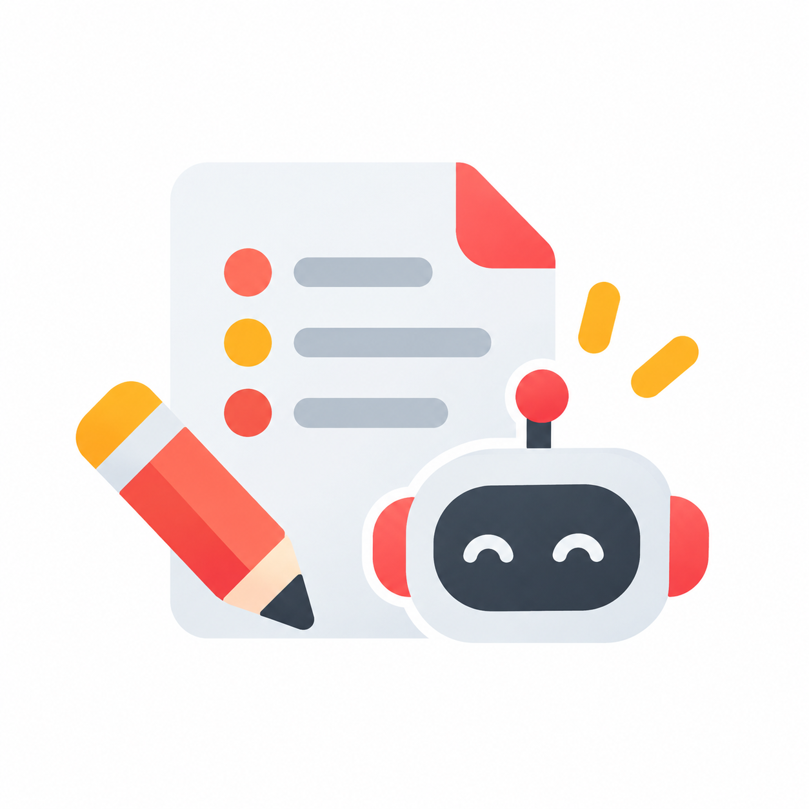
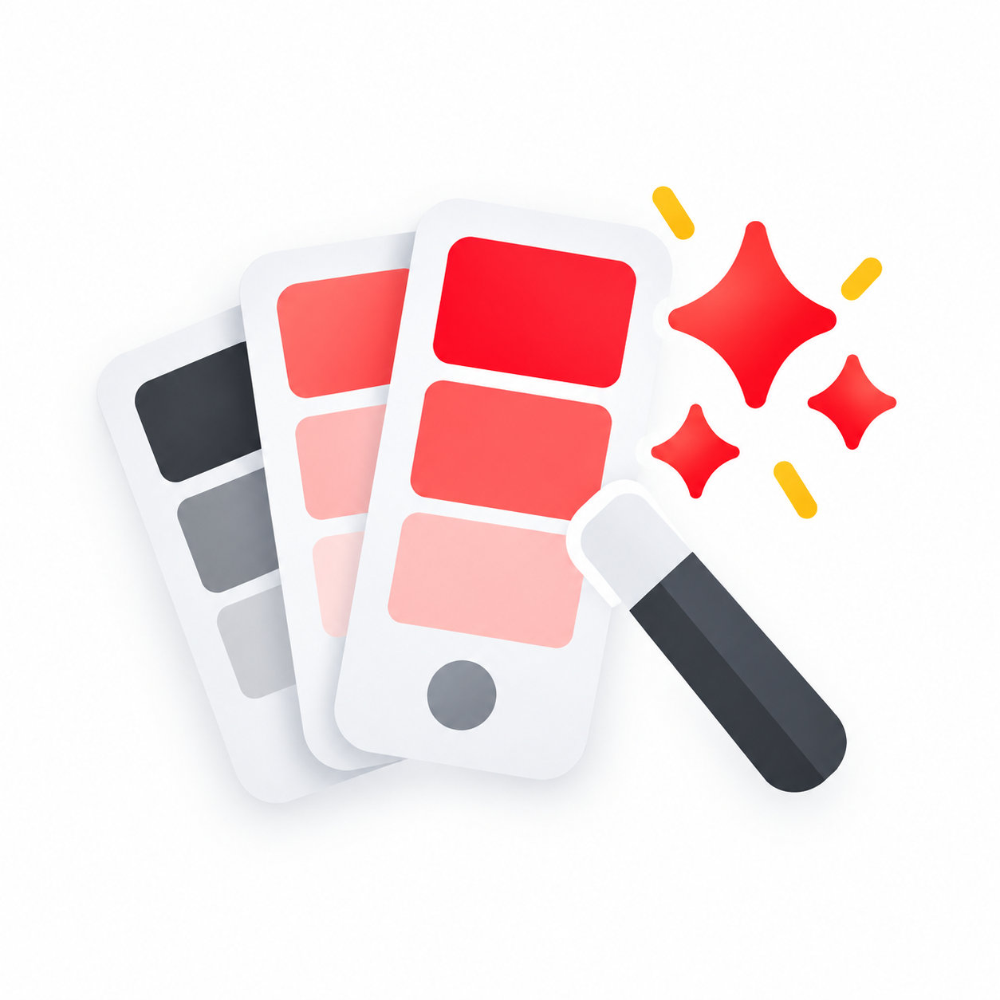
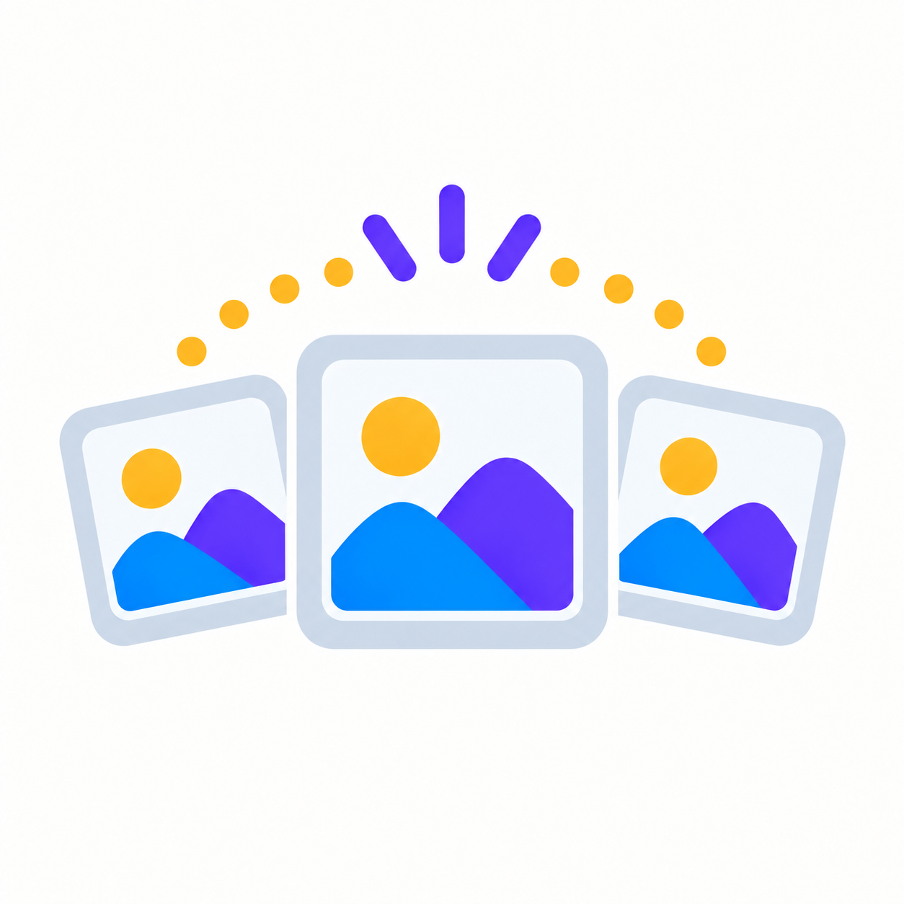

Företagarintervju 1
Kort video om hur AI används i företagets vardag.
Företag berättarKommer senare
Inspiration, korta guider och konkreta exempel för småföretag som vill använda AI i vardagen.
Svara på några korta frågor. Motorn använder metadata i materialbanken och föreslår sådant som passar ditt behov.
Företagare berättar med egna ord hur de använder AI, vad som fungerat och vad de lärt sig.
Kort video om hur AI används i företagets vardag.

Ett konkret exempel på en uppgift där AI blivit ett stöd.

Vad blev enklare – och vad behöver fortfarande mänsklig kontroll?

Fler röster och exempel fylls på efter hand.
Korta guider som går direkt på en uppgift. Välj den du behöver just nu – du behöver inte följa någon kursordning.

Låt AI hjälpa dig ta fram en enkel färgpalett för webb, sociala medier eller annat material.
Förstå skillnaden mellan en vanlig AI-chatt och en återanvändbar AI-assistent.

Använd samma visuella recept och en referensbild för en mer sammanhållen bildserie.
Studerande arbetade med riktiga företagsbehov. Här är korta, anonymiserade case med fokus på vad andra småföretag kan ta med sig.

Från befintligt material till nya versioner, språk eller format.

Låt AI hjälpa dig hitta skillnader och sådant som behöver kontrolleras.
Använd AI som stöd när du vill hitta mönster och frågor i din data.

Använd tidigare texter som stöd för att skapa nya utkast med rätt ton.
Korta poddar och resurser om sådant som är bra att tänka på innan du delar data, publicerar AI-material eller bygger nya arbetssätt.
Vad är bra att tänka på när AI blir en del av vardagsarbetet?
En kort påminnelse om data, dokument och känslig information.
Hur AI kan påverka vad vi behöver kontrollera extra noga.
När behöver en människa alltid läsa, kontrollera eller fatta beslut?
Presentationer och annat material från externa föreläsare. Rubriker och länkar kompletteras när materialet är klart.

Plats för föreläsningens tema, en kort beskrivning och länk till presentationsmaterialet.
Plats för föreläsningens tema, en kort beskrivning och länk till presentationsmaterialet.